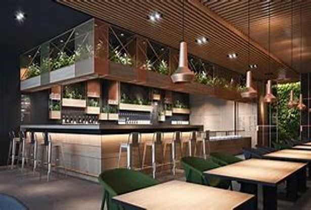

Essence Brews Café


Welcome to our minimalist coffee sanctuary, where simplicity intertwines with the art of coffee craftsmanship, creating a haven for discerning souls seeking tranquility and exceptional brews. Step inside and immerse yourself in the understated elegance that defines our space. The minimalist design philosophy echoes throughout, from the unembellished furniture to the carefully selected color scheme that whispers of calmness and sophistication. Every element has been meticulously curated to evoke a sense of serenity, allowing your focus to rest solely on the richness of the coffee experience. As you settle into our serene surroundings, indulge in the symphony of flavors meticulously coaxed from premium beans by our dedicated baristas. Each cup is a testament to our commitment to the essence of coffee, embracing the purity of taste while celebrating its complexities. Take a moment to appreciate the symmetrical beauty of our minimalist decor while relishing the intricate layers of aroma and taste dancing within your cup. But our dedication to minimalism extends beyond aesthetics. It's a philosophy that guides every aspect of our coffee-making process, from the carefully sourced beans to the precise brewing methods. Our desire is not only to offer a delightful cup of coffee but also to invite you on a journey to explore and appreciate the purity and simplicity that coffee, in its truest form, embodies. Join us in embracing the quiet elegance of minimalism while elevating your coffee experience. Let our tranquil space be your sanctuary, where the fusion of simplicity and indulgence awaits your discovery with every sip.
our minimalist coffee haven stands as an ode to simplicity and refinement. Step into a space where each line, each hue, whispers of understated elegance. From the unadorned furniture to the muted color palette, every element has been meticulously chosen to create an atmosphere that encourages mindfulness and appreciation for the essence of coffee. Our commitment to minimalism extends beyond aesthetics. It's a philosophy ingrained in every facet of our coffee-making process. We meticulously source premium beans, selecting only the finest varieties for their exceptional quality and nuanced flavors. Our skilled baristas then employ precise brewing techniques to extract the purest essence from each bean, crafting cups that celebrate the integrity and complexity of the coffee. At our coffee shop, simplicity isn't merely a design choice; it's an experience. We invite you to pause amidst the clean lines and uncluttered spaces, to savor the moment and immerse yourself in the singular pleasure of a perfectly brewed cup. Whether you prefer the robust notes of a dark roast or the delicate subtleties of a light blend, our menu boasts a selection that caters to diverse palates, all prepared with the utmost care and dedication to quality. In this sanctuary of simplicity, time seems to slow down, inviting you to linger, to connect, or simply to find solace in the embrace of tranquility. Join us in celebrating the art of minimalism as you embark on a sensory journey, where each sip offers a glimpse into the exquisite beauty of unadorned perfection.